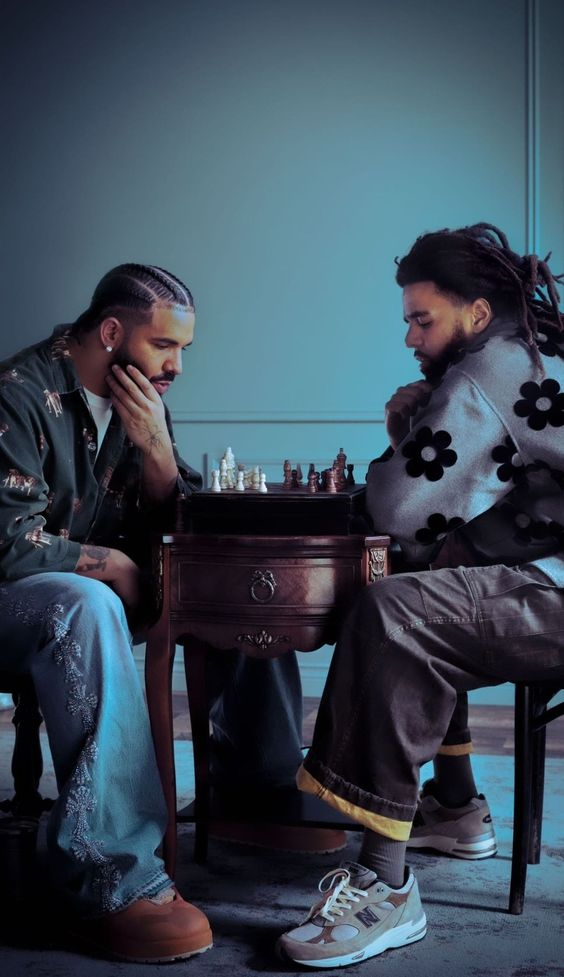
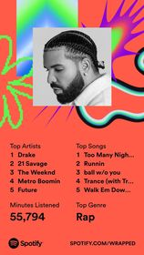
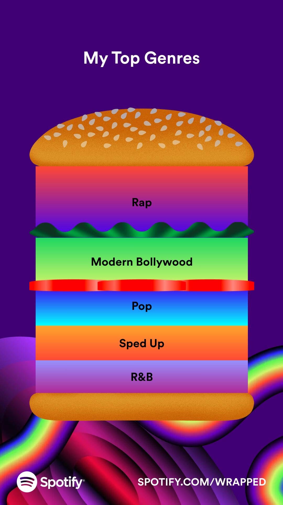
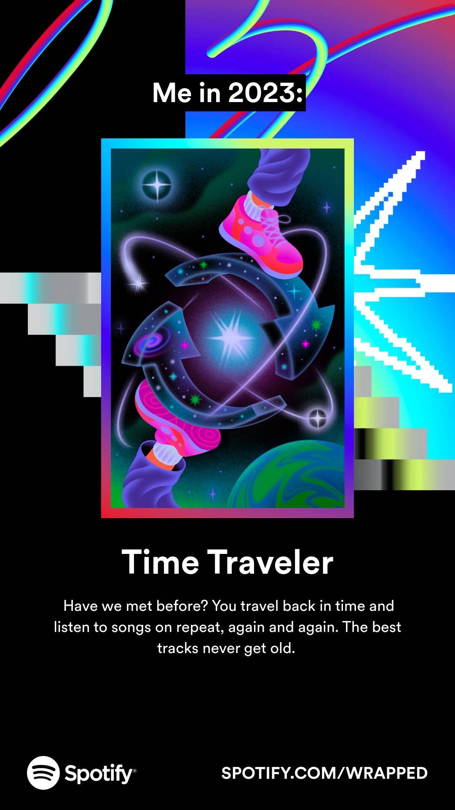
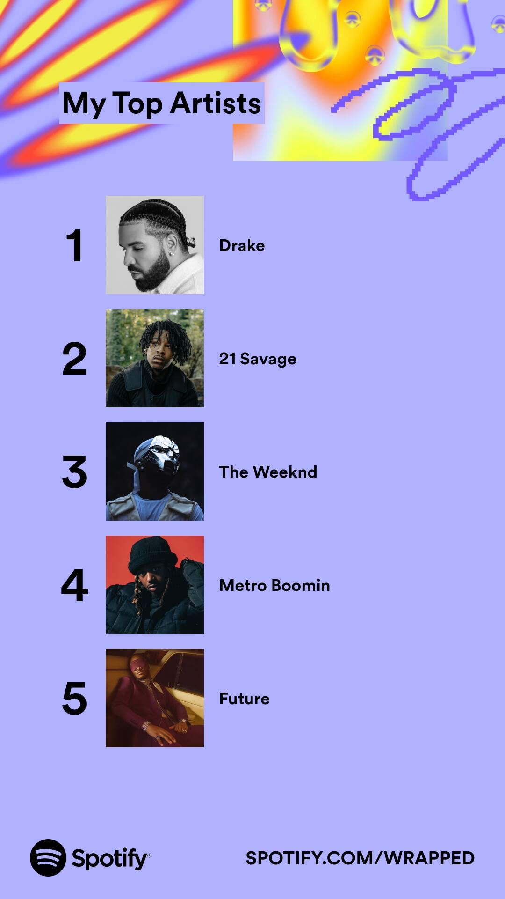
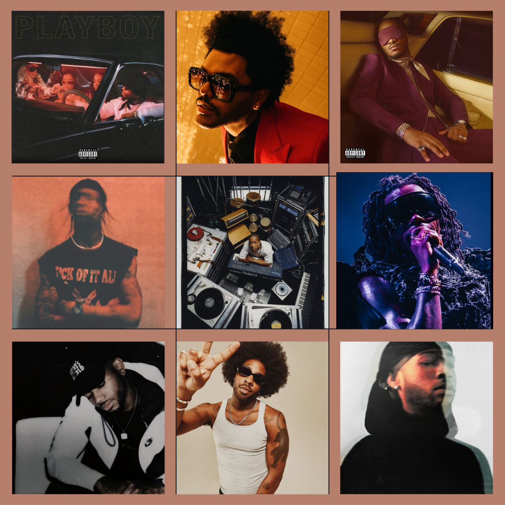

Some of my favorite songs

I always find myself changing around my music rotation but these songs will always be played.
Here are some recomendations I have:
- Skeletons by Travis Scott
- Under The Sun by Dreamville
- Acting Like by Tory Lanez
- Pyramids by Frank Ocean
- Trance by Metro Boomin
- The Ride by Drake
- Pipe Down by Drake
- The Party & After Party by The Weeknd
- Let em' Know by Bryson Tiller
- No Child Left Behind by Kanye West
- Virginia Beach by Drake
My Spotify Stats
Spotify shares its user stats throughout the year with its spotify wrapped. I am always looking forward to my spotify wrapped being released because my music taste tends vastly over the years. My stats this year kind of suprised me as I was not expecting a lot of these artists and songs to be featured on my wrapped.




My Favorite Artits
My main genres of music that I listen to are rap and r&b. If you are gravitated to those genres of music, I highly recomened some of these artists:
- Drake
- J. Cole
- 21 Savage
- Tory Lanez
- Travis Scott
- Bryson Tiller
- The Weeknd
- Future
- Brent Faiyaz
- PARTYNEXTDOOR
